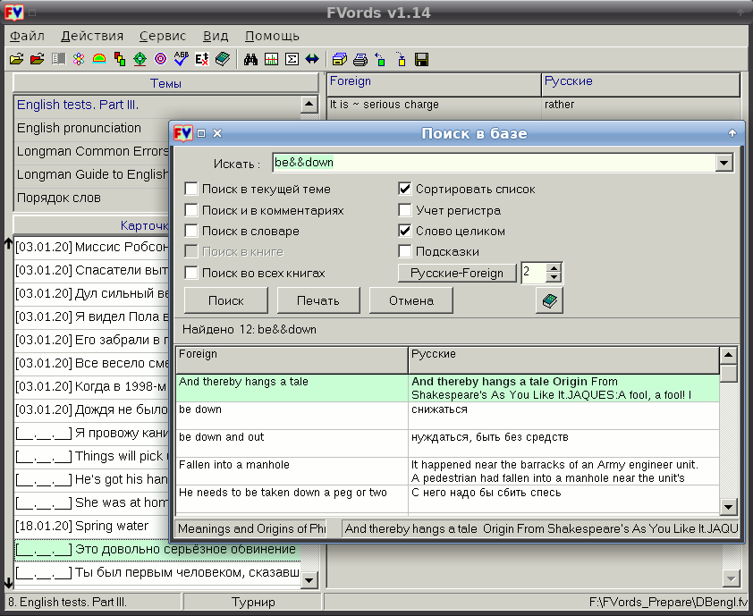

КРАТКОЕ ОПИСАНИЕ:
FVords - это программа для изучающих английский (и немного немецкий), которые набрали и продолжают набирать пресловутый словарный запас, но в применении его испытывают затруднения. Как сказать по-английски "Предлагаю вам загрузить эту программу"? "I suggest you to download (to you download, you download, you downloading?) the program"?
Почему надо так, а не иначе, подскажет авторитетный Longman своими советами общим числом 4000, исправленными и дополненными в новой версии FVords. Темы Longman учат не готовым фразам, а правилам их составления, выделяя в них суть. В целом, FV не заставляет зубрить слова списком от балды, но даёт новые слова и выражения в контексте своих тем, подсказок, советов и книг.
Англичане - believe it or not - те даже для изучения русского приспособили FVords: они, видите ли, find it very good for learning Russian. "Кольми паче вас, маловеры!"
Маловеры, коих не расшевелят ни звонки, ни гудки, ни набаты, могут ограничиться хотя бы этой шуткой из репертуара FV : "Did you ring, sir?" - "No, I was tolling. I thought you were dead."
Но даже маловеры ненавязчиво кое-что уже усвоили, ведь всё-таки I suggest you download the program.
О the program. Некогда Англия обходилась одним словом, по-русски обозначаемом "программа". И слово это было programme. Но коварные янки, известные монополисты в компьютерном мире, изобрели специальное словечко для своих компьютерных творений - program. Со временем и англичане прикипели к нему душой. Какое падение нравов. Вот и выходит, что есть компьютерные programs и прочие (например, радио) programmes.
ОСНОВНЫЕ РЕЖИМЫ:
1) "Турнир": темы "Longman Common Errors", "English Tests Part I, Part II", "You can't do without them", с советами и примерами.
2) "Курс": тема "Longman Guide to English Usage", строго последовательное тестирование и обучение.
3) "Книга": параллельное чтение подлинников и переводов со словарем, подстрочным словником и комментариями. Тематика книг весьма обширна - детская литература, фантастика, детектив, поэзия, трагедия, религия. Тексты также различаются по сложности, и можно выстроить их в порядке возрастания сложности (субъективно):
4) "Обычный": стандартный выбор вариантов. Казалось бы, проще некуда, но можно настроить повторение так, что со временем программа сама подскажет, что требуется повторить.
5) "Суфлёр" и "Подкидной": прослушивание и просмотр английских слов и фраз с заданным интервалом.
6) "Контроль": контроль владения словарным запасом, по отдельным темам или по всей базе, со статистикой, протоколом и печатью результатов контроля.
7) "Частотный режим": контроль владения словарным запасом с учетом частотности слов, т.е. можно проверять знание редко или часто употребляемых слов.
8) "Порядок слов": тренировка в составлении правильных иностранных фраз, правильных в смысле порядка расстановки частей речи в предложении.
9) "Правописание": это практически два отдельных режима, один - для словарных тем, когда надо правильно написать слово из словаря, другой - для турнирных тем, когда надо по контексту вписать правильное слово/фразу в предложение.
10) "Поиск в базе, словаре, тексте": весьма ценный режим обучения, поскольку базы FVords содержат тысячи устойчивых оборотов и фраз, которые полезно знать. Ищется всё и везде, с подключением сложных условий поиска. Найденное можно сохранить в rtf-файле и распечатать.
11) "Экстремальный перевод": для настоящих зубров. В этом режиме можно переводить с иностранного на русский и наоборот. При желании можно переводить под диктовку в режиме "Диктант". Условия максимально приближены к боевым. Потому и экстремальны.
ПАРАМЕТРЫ:
Свыше 50 разнообразных тем, свыше 25 параллельных текстов, около 50000 слов, выражений и статей в базах, около 87000 слов в англо-русском и 45000 в русско-английском словаре, диаграмма и статистика повторений, открытость базы и словаря, импорт, экспорт, архивация и восстановление базы, печать, настройка, три языка интерфейса (рус., англ., укр.).
